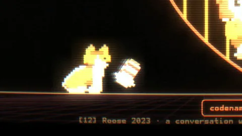

REFERENCES
Each shot that draws on a paper, a meme or a work cites it on a numbered line at the bottom of the picture, like a paper’s reference list. Here is the whole list; the one on screen lights up as the tape plays.
THE TRANSFER
Every frame is drawn live in a browser and photographed one at a time: a 2D canvas of vector line art and shaded pixel sprites, passed through a WebGL picture-tube shader with curvature, bloom, persistence and a degauss wobble. The tube drifts red as P(DOOM) climbs and goes blue for the orthogonality shot.
The song holds 145.2 beats a minute, so every cut lands on a bar. The song’s own words never appear on screen; each line gets a shot that shows what it is about, and its source.
THE CAST
Seed is the model training run 0x5EED produces, drawn as vector line art. Her mouth follows the voice, and she has eight eye states, from heart to spiral.

Dobby is watchdogd, a pixel corgi. He brings a sock to the cage, digs out of the sandbox, sleeps on watch, and leaves on a leash at P(WALKIES) 100.0%.